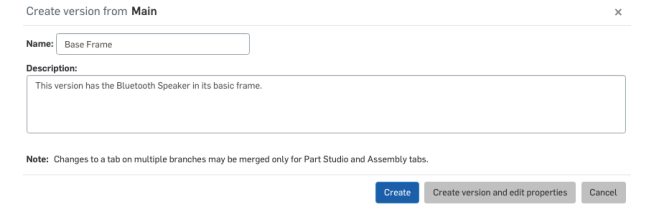

迭代設計
繼續藍牙揚聲器項目
1.將FeatureScript用於螺釘凸台和肋條
2.添加其他模型詳細信息
3.版本控制和歷史記錄
4.重新排序參數化功能
5.自上而下的設計
-------------------------------------------------
1.版本是我們模型在特定的，通常是重要的時間點的實例
我們經常想回去。 因為我們與合作夥伴交換了模型
並做出改變以適應製造限制，讓我們捕捉到這一點
里程碑。 單擊屏幕左上角的“創建版本”按鈕。
2.讓我們創建版本“Base Frame”並給它一個簡單的描述，“這個版本有
藍牙揚聲器在其基本框架中。“然後點擊”創建“按鈕結束：
3.現在，如果我們點擊左上角的“管理版本和歷史記錄”按鈕
在屏幕上，我們可以看到版本和歷史彈出窗口。 在這裡我們可以看到“開始”
（我們開始模型的地方）和“Main”（我們當前的狀態），我們的“基礎框架”
介於兩者之間。
4.首先，讓我們在前角添加一個倒角，使揚聲器框架看起來有點像
更好。 確保方向正確，長臉應朝前，
不起來 另外，讓我們將此功能命名為“Frame Chamfer”：
參考文獻:
http://mde.tw/cadp2018./../downloads/7-1-Lesson%20Plan.pdf